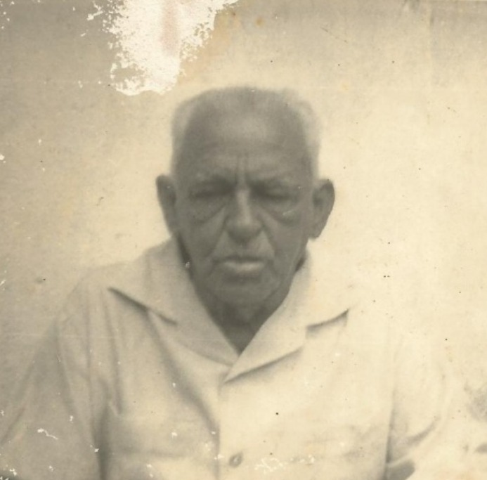
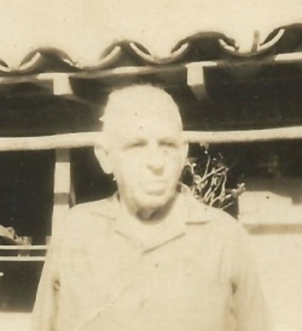
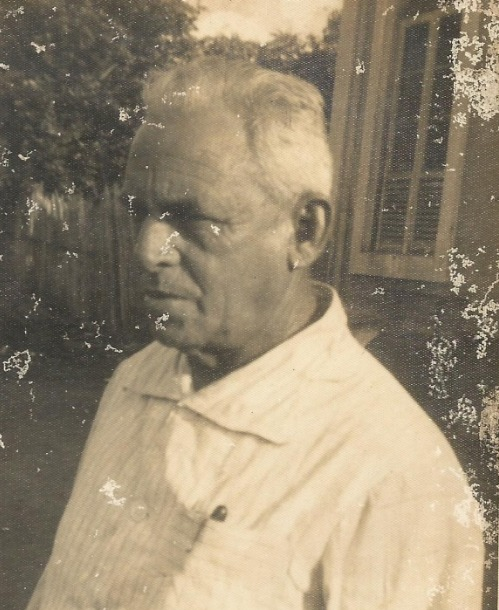
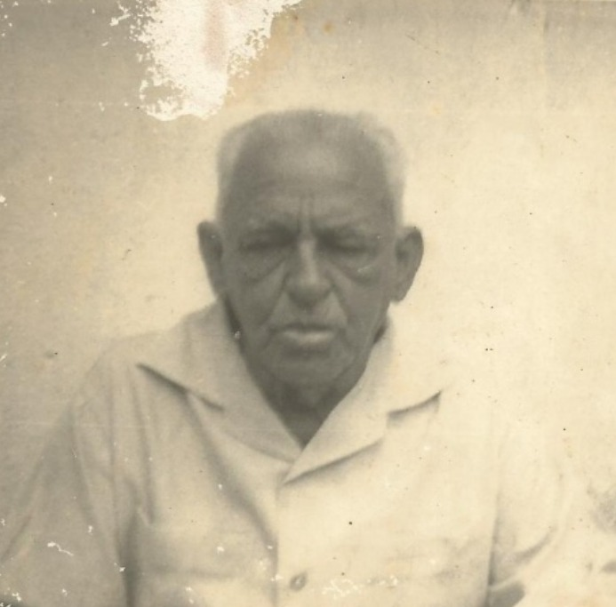
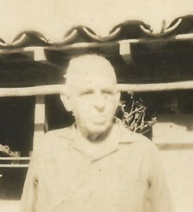
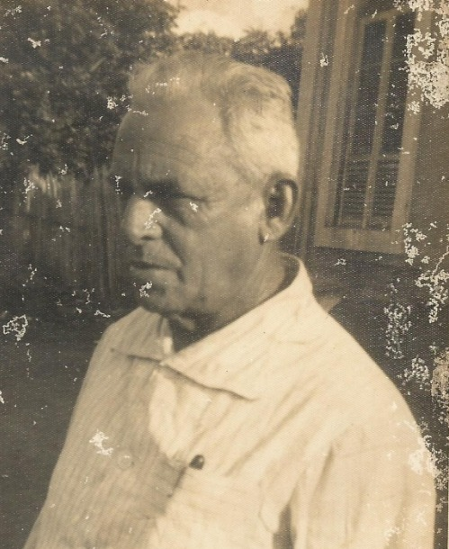

Capítulo 6D – Pedro de Sousa Bentes I (Patriarca)
Este capítulo conduz a família Bentes a um tempo mais distante, aos anos finais do século XIX e início do século XX, período marcado por transformações profundas no Brasil e pela consolidação de muitas famílias que lançaram raízes duradouras na Amazônia.
Pedro de Sousa Bentes, patriarca desta linhagem, nasceu por volta de 1860 no Curuá, fazendo parte das famílias pioneiras do Curuá. Viveu em uma época em que a vida era regida pelo trabalho árduo, pelos laços comunitários e pela transmissão oral da história familiar. Casou-se com Maria de Sousa Bentes, nascida por volta de 1860 no Curuá, fazendo parte das famílias pioneiras do Curuá, com quem construiu um lar sólido e numeroso, baseado na união, na fé e no esforço cotidiano.
Dessa união nasceram vários filhos, que deram continuidade ao sobrenome Bentes e espalharam seus ramos ao longo das gerações:
- Idália de Souza Bentes, nascida em 19 de dezembro de 1888 e falecida em 22 de setembro de 1980, cuja longa vida atravessou diferentes períodos históricos, testemunhando mudanças sociais e familiares. Idália é Matriarca da família Bentes Marinho de Óbidos, onde foi morar e construir sua família;
- Pedro de Sousa Bentes, nascido em 22 de junho de 1900 e falecido em 29 de abril de 1979, que herdou o nome do pai e deu continuidade direta à linhagem, tornando-se o pai de Raimunda Maria da Silva Bentes;
- Geraldo de Sousa Bentes;
- Janita de Sousa Bentes;
- Anatilde de Sousa Bentes;
- Alderindo de Sousa Bentes.
Pedro de Sousa Bentes viveu entre os anos de mil e oitocentos e o início do século vinte, deixando como legado uma descendência numerosa e coesa. Sua história representa a base estrutural da família Bentes, um tronco ancestral do qual brotaram gerações comprometidas com o trabalho, a família e a preservação da memória.
Assim, este patriarca ocupa lugar de destaque na genealogia familiar, sendo um elo fundamental entre o passado distante e as gerações que, décadas depois, continuariam a escrever a história da família Nascimento & Vale.
Pioneirismo no Curuá
A história da vila que deu origem ao atual município de Curuá não pode ser compreendida sem o reconhecimento das famílias que, geração após geração, consolidaram sua estrutura social, econômica e cultural. Entre essas linhagens destacam-se os Bentes, os Baixo da Silva e os Pereira Garcia, cujas raízes se entrelaçam desde os primeiros tempos da organização da comunidade.
As Raízes no Solo do Curuá
Os avós maternos e paternos de Raimunda Maria da Silva Bentes nasceram no próprio Curuá e pertenciam às famílias que participaram da consolidação da vila ainda em sua fase inicial. Não eram recém-chegados: eram filhos da terra, criados às margens do rio, integrados ao ritmo da floresta e à economia rural que sustentava a localidade.
Essas famílias faziam parte do núcleo que sucedeu a fase inicial de ocupação extrativista e que transformou o antigo ponto de exploração em comunidade estruturada.
Pedro de Sousa Bentes e Maria de Sousa Bentes
Entre os descendentes dessas famílias pioneiras encontra-se Pedro de Sousa Bentes, nascido em Curuá antes de 1900. Ele se casou com Maria de Sousa Bentes, também natural da mesma localidade.
Ambos pertenciam ao grupo de famílias tradicionais que permaneceram na região quando muitos migravam para outros polos do Baixo Amazonas. O casal representa a consolidação da segunda geração de moradores nascidos já dentro da vila organizada.
A Geração de 1900: Continuidade e Expansão Familiar
Do casal nasceu Pedro de Sousa Bentes, no ano de 1900, em Curuá. Sua trajetória reforça a permanência das famílias tradicionais no município.
Ele contraiu dois matrimônios:
-
Primeiro casamento: com Tereza Pereira Garcia, pertencente igualmente a uma das famílias pioneiras da vila.
Dessa união nasceu Eduardo Pereira Garcia, também natural de Curuá. - Segundo casamento: com Ana da Silva Bentes, filha de Maria Baixo da Silva, ambas nascidas em Curuá.
Essas uniões revelam algo significativo: não se tratava de alianças ocasionais, mas de um padrão comum nas comunidades amazônicas do período — o fortalecimento de vínculos entre famílias fundadoras, preservando laços sociais, propriedades e identidade comunitária.
A Família Pereira Garcia
O sobrenome Pereira Garcia também figura entre as famílias mais antigas da vila. Sua presença nas primeiras gerações confirma que o crescimento de Curuá não foi obra isolada de um único grupo, mas resultado de um tecido familiar interligado, onde casamentos reforçavam a estabilidade social e econômica.
A união entre Bentes e Pereira Garcia demonstra que essas famílias não apenas coexistiam, mas colaboravam na construção da vila.
A Família Baixo da Silva
A linhagem Baixo da Silva, representada por Maria Baixo da Silva e sua filha Ana da Silva Bentes, reforça a origem profundamente local dessas gerações. Trata-se de famílias nascidas e estabelecidas no próprio Curuá, não de migrantes recentes.
O casamento de Pedro de Sousa Bentes (1900) com Ana da Silva Bentes evidencia o entrelaçamento de sobrenomes tradicionais, mantendo a herança social e territorial dentro do núcleo original da vila.
Continuidade Histórica
Ao observar essa sequência geracional, percebe-se uma linha contínua:
- Primeiras famílias da vila
- Segunda geração nascida em Curuá
- Consolidação rural e familiar no início do século XX
- Permanência até meados do século XX
Essa continuidade sugere que a história de Curuá não é apenas institucional, mas profundamente familiar. São essas linhagens que mantiveram a terra, a fé, as tradições e a memória coletiva.
.JPG) Alderindo de Sousa Bentes
Alderindo de Sousa Bentes
 Anatilde de Sousa Bentes
Anatilde de Sousa Bentes
.JPG) Idália de Sousa Bentes
Idália de Sousa Bentes
.JPG) Pedro de Sousa Bentes II

Alderindo

Alderindo

Alderindo
Pedro de Sousa Bentes II

Alderindo

Alderindo

Alderindo
 de Souza Bentes.jpeg) Anatilde (Naná) de Sousa Bentes
Anatilde (Naná) de Sousa Bentes
 Neuza.jpeg) Comemoração de seus 90 anos 19.12.1978 ÓbidosPA Da esquerda p a direita Felisberto – Feliz, Rizzo, Rui, Wilson. Na frente Felinto (Idália) Neuza
Comemoração de seus 90 anos 19.12.1978 ÓbidosPA Da esquerda p a direita Felisberto – Feliz, Rizzo, Rui, Wilson. Na frente Felinto (Idália) Neuza
 Idália 90 e Neuza
Idália 90 e Neuza
 Idália Bentes Marinho Comemoração de seus 80 anos 19.12. 1968 ÓbidosPA
Idália Bentes Marinho Comemoração de seus 80 anos 19.12. 1968 ÓbidosPA
 Idália de Sousa Bentes
Idália de Sousa Bentes
 Neuza 19.12.1968.jpeg) Idália e seus filhos Da esq p dir Em pé Feliz, Wilson, Rizzo, Felinto. Sentadas Cleuza (Idália) Neuza 19.12.1968.jpeg
Idália e seus filhos Da esq p dir Em pé Feliz, Wilson, Rizzo, Felinto. Sentadas Cleuza (Idália) Neuza 19.12.1968.jpeg